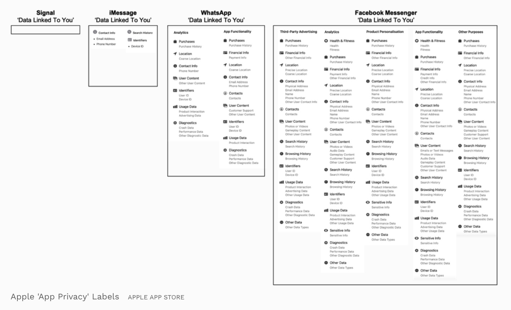

Probablemente uses WhatsApp. WhatsApp es una aplicación de Facebook, una empresa estadounidense cuyo modelo económico consiste en la recopilación de datos de los usuarios de sus servicios y la venta de estos a empresas a fin de que puedan anunciarse a usuarios más específicos. WhatsApp ha actualizado su política de gestión de datos y obliga a aceptar las nuevas condiciones a partir del 8 de Febrero de 2021. Estas nuevas condiciones dan acceso a Facebook a información como el número de teléfono, con quién tenemos conversaciones, la IP, la calidad de la conexión, la batería del dispositivo y otros datos identificadores a fin de potenciar su modelo económico.

WhatsApp es la aplicación de mensajería más utilizada del mundo. Es donde están todos nuestros contactos, lo que hace difícil dejar de usarlo sin sentir que quedaremos incomunicados. Aún así, antes que rendirnos y permitir que Facebook tenga el control sobre las comunicaciones personales de todo el planeta, prefiero hacer lo que esté en mi mano a fin de que todos podamos tener conversaciones seguras y privadas. Quiero que esto sea algo de lo que se hable y que entre todos tomemos conciencia y actuemos. La infraestructura existe. Hay alternativas.
Dejo aquí algunos servicios alternativos a WhatsApp a través de los cuales se puede contactar conmigo junto con mi opinión sobre cada uno. El orden indica simplemente mi preferencia personal.
Los palabros marcados en negrita están explicados al final.
XMPP es un protocolo abierto de conversación que existe desde 1999. Es federado: se crea una cuenta en un servidor y se puede hablar con cualquier usuario aunque tenga su cuenta en otro distinto.
Simplemente elige un servidor y un cliente, crea la cuenta en el servidor e introduce esa información en el cliente. Recuerda: puedes hablar con cualquier usuario sin importar que uséis servidores y/o clientes distintos.
El cliente más usado para Android es Conversations. En Play Store cuesta 2.49€ y en F-Droid es gratuito.
Gajim es un cliente de escritorio para Windows, MacOS y Linux. Dino es un cliente de escritorio para Linux.
Opciones de servidores son trashserver.net o 404.city. parloteo.es es un servidor ubicado en España pero me ha dado algún problema de conexión.
Mis cuentas son taamas@404.city, taamas@trashserver.net y taamas@parloteo.es.
Matrix es en cierta manera una alternativa a discord. Hay una gran variedad de clientes distintos, tanto para móvil como para escritorio o web, algunos muy parecidos en aspecto a Whatsapp.
Element es un cliente para navegador, escritorio y móvil. Puede hacerse una cuenta, abrirse en el navegador y descargarse aquí.
Pueden verse otros clientes de Matrix para distintas plataformas aquí.
Matrix es federado: No importa en qué servidor se haga la cuenta, puede hablarse libremente con cualquier usuario de Matrix de cualquier servidor.
Mi usuario en Matrix es @taamas95:matrix.org.
Signal es un sistema de mensajería similar en su uso a WhatsApp que usa de base encriptación de extremo a extremo mediante un protocolo con licencia de código abierto. Este mismo protocolo es el que WhatsApp asegura que utiliza para encriptar sus conversaciones (pero dado que el código de WhatsApp no es público no hay forma de confirmarlo ni de saber si le han añadido puertas traseras). La empresa que lo gestiona está registrada como sin ánimo de lucro. Requiere un número de teléfono para registrarse, pero no para usarse. Elon Musk la recomienda, sea eso para bien o para mal.
Puede usarse en Android, iOS, Linux, Windows o Mac y descargarse aquí.
Se me puede encontrar en Signal por mi número de teléfono.
Telegram es probablemente la alternativa más conocida. Requiere un número de teléfono y presume de que su cliente es de código abierto, pero de poco sirve esto cuando el código de los servidores no lo es. Aún así permite más variedad de clientes.
Otra desventaja que le veo a Telegram es que no ofrece encriptación de extremo a extremo por defecto, aunque sí la ofrece en lo que llama chats secretos.
Se me puede encontrar en Telegram por mi número de teléfono.
Aunque no es un servicio de mensajería como WhatsApp quiero mencionar Mastodon como posible vía de comunicación.
Mastodon es una red social similar en concepto a Twitter. La principal ventaja sobre Twitter es que es abierta y federada. Los usuarios pueden crear cuentas en un servidor y seguir a gente que tenga su cuenta en otros servidores de forma transparente, permitiendo que cada comunidad ponga sus propias normas pero sin que esto evite que todos los usuarios puedan conectar entre ellos.
Algunos servidores de temática general donde se puede registrar una cuenta son mstdn.social o mastodon.online. Pueden verse otras comunidades aquí.
Mi principal cuenta de Mastodon es @taamas@fosstodon.org.